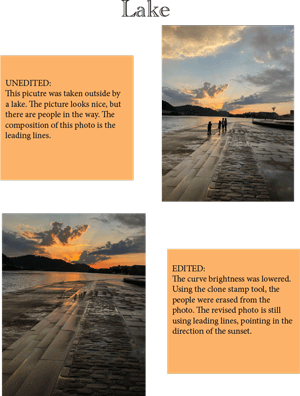

Madison VonNeida's Digital Photos |
||
|
|
This project challenged my ability to be precise and pay attention to detail. We were tasked with finding four photographs that we took and make edits on Photoshop to make the picture look better. There are certain compositions that were required, symmetry, rule of thirds, point of view, leading lines, and framing. For the picture edited to the right, I used leading lines. |
 |